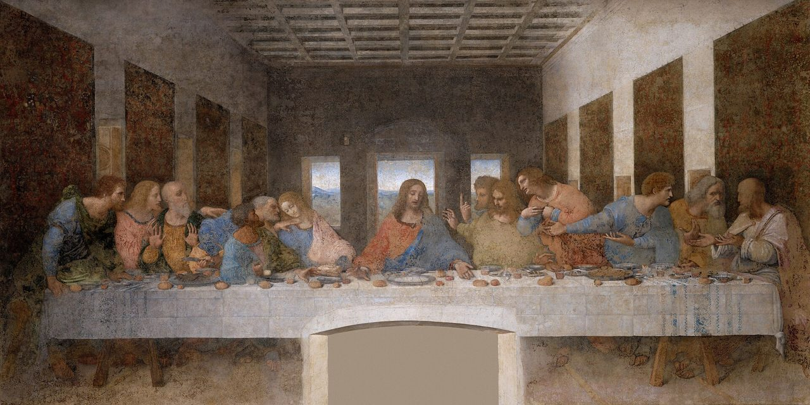

← 藝術101名畫背後的故事 EP19
最後的晚餐
達文西・約 1495–1498

完成沒多久，它就開始剝落。
他不想趕
1495 到 1498 年，達文西在米蘭恩寵聖母院的修道院餐廳牆上，畫下《最後的晚餐》。正統濕壁畫得趁灰泥未乾快速畫完，他改在乾牆上作畫，可以慢慢改，但顏料只貼在表面，沒有吃進牆裡。
壞掉的紀錄
1517 年，就有教士寫下這幅畫開始敗壞；後來瓦薩里形容只剩「一片發亮的污漬」。1652 年，有人在牆上開了一道門，桌下那塊拱形缺口，切掉了耶穌的腳。
撐到今天
1943 年餐廳被炸，這面牆靠沙包撐了下來。最後一次大修花了二十多年，1999 年完成。現在參觀要預約，每次只能待 15 分鐘。
下次看到它，先看這裡
拱形門洞缺口 1652年開門，切掉耶穌的腳
耶穌 位於透視消失點，畫面正中
剝落的左牆掛毯 斑駁失色，顏料大片剝落
作品資料
達文西（Leonardo da Vinci）
《最後的晚餐》The Last Supper，約 1495–1498
乾壁上蛋彩（tempera）等，繪於石膏底層，非濕壁畫 460 × 880 公分
米蘭 恩寵聖母院（Santa Maria delle Grazie）修道院餐廳
《最後的晚餐》The Last Supper，約 1495–1498
乾壁上蛋彩（tempera）等，繪於石膏底層，非濕壁畫 460 × 880 公分
米蘭 恩寵聖母院（Santa Maria delle Grazie）修道院餐廳